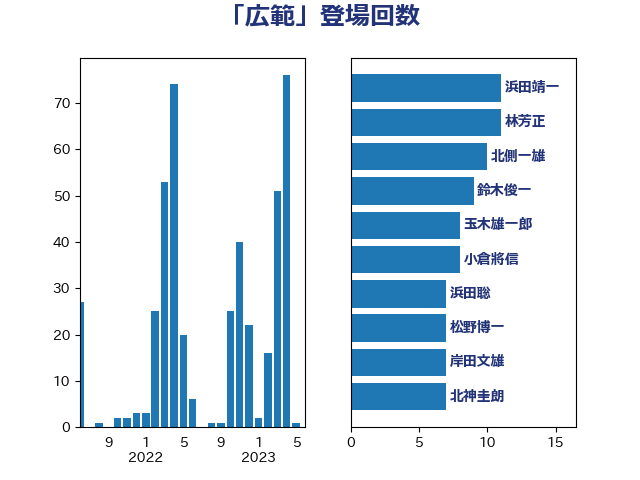

単語「広範」

| 浜田靖一 | 自由民主党 | 11 回 |
| 林芳正 | 自由民主党 | 11 回 |
| 北側一雄 | 公明党 | 10 回 |
| 鈴木俊一 | 自由民主党 | 9 回 |
| 玉木雄一郎 | 国民民主党 | 8 回 |
| 小倉將信 | 自由民主党 | 8 回 |
| 浜田聡 | NHK党 | 7 回 |
| 松野博一 | 自由民主党 | 7 回 |
| 岸田文雄 | 自由民主党 | 7 回 |
| 北神圭朗 | 無所属 | 7 回 |
| 藤巻健太 | 日本維新の会 | 5 回 |
| 福島みずほ | 社会民主党 | 5 回 |
| 永岡桂子 | 自由民主党 | 5 回 |
| 柴田巧 | 日本維新の会 | 5 回 |
| 小西洋之 | 立憲民主党 | 5 回 |
| 前川清成 | 日本維新の会 | 5 回 |
| 音喜多駿 | 日本維新の会 | 4 回 |
| 浅野哲 | 国民民主党 | 4 回 |
| 杉尾秀哉 | 立憲民主党 | 4 回 |
| 本庄知史 | 立憲民主党 | 4 回 |
| 斉藤鉄夫 | 公明党 | 4 回 |
| 平木大作 | 公明党 | 4 回 |
| 山添拓 | 日本共産党 | 4 回 |
| 奥野総一郎 | 立憲民主党 | 4 回 |
| 加藤勝信 | 自由民主党 | 4 回 |
| 三木圭恵 | 日本維新の会 | 4 回 |
| 赤嶺政賢 | 日本共産党 | 3 回 |
| 若宮健嗣 | 自由民主党 | 3 回 |
| 浜野喜史 | 国民民主党 | 3 回 |
| 松本剛明 | 自由民主党 | 3 回 |
| 川田龍平 | 立憲民主党 | 3 回 |
| 山際大志郎 | 自由民主党 | 3 回 |
| 山岸一生 | 立憲民主党 | 3 回 |
| 小里泰弘 | 自由民主党 | 3 回 |
| 大串博志 | 立憲民主党 | 3 回 |
| 吉田宣弘 | 公明党 | 3 回 |
| 鬼木誠 | 立憲民主党 | 2 回 |
| 高良鉄美 | 無所属 | 2 回 |
| 階猛 | 立憲民主党 | 2 回 |
| 西村康稔 | 自由民主党 | 2 回 |
| 萩生田光一 | 自由民主党 | 2 回 |
| 簗和生 | 自由民主党 | 2 回 |
| 篠原豪 | 立憲民主党 | 2 回 |
| 神津たけし | 立憲民主党 | 2 回 |
| 石川博崇 | 公明党 | 2 回 |
| 田村貴昭 | 日本共産党 | 2 回 |
| 牧山ひろえ | 立憲民主党 | 2 回 |
| 熊谷裕人 | 立憲民主党 | 2 回 |
| 河野太郎 | 自由民主党 | 2 回 |
| 梅村みずほ | 日本維新の会 | 2 回 |
| 柴山昌彦 | 自由民主党 | 2 回 |
| 枝野幸男 | 立憲民主党 | 2 回 |
| 末松義規 | 立憲民主党 | 2 回 |
| 新藤義孝 | 自由民主党 | 2 回 |
| 新垣邦男 | 立憲民主党 | 2 回 |
| 後藤茂之 | 自由民主党 | 2 回 |
| 岩谷良平 | 日本維新の会 | 2 回 |
| 山本剛正 | 日本維新の会 | 2 回 |
| 小池晃 | 日本共産党 | 2 回 |
| 宮本岳志 | 日本共産党 | 2 回 |
| 堀場幸子 | 日本維新の会 | 2 回 |
| 城井崇 | 立憲民主党 | 2 回 |
| 國重徹 | 公明党 | 2 回 |
| 吉良よし子 | 日本共産党 | 2 回 |
| 吉田統彦 | 立憲民主党 | 2 回 |
| 吉川沙織 | 立憲民主党 | 2 回 |
| 勝部賢志 | 立憲民主党 | 2 回 |
| 井野俊郎 | 自由民主党 | 2 回 |
| 世耕弘成 | 自由民主党 | 2 回 |
| 鶴保庸介 | 自由民主党 | 1 回 |
| 高橋光男 | 公明党 | 1 回 |
| 高木かおり | 日本維新の会 | 1 回 |
| 馬場伸幸 | 日本維新の会 | 1 回 |
| 青柳陽一郎 | 立憲民主党 | 1 回 |
| 青木愛 | 立憲民主党 | 1 回 |
| 青山大人 | 立憲民主党 | 1 回 |
| 阿部司 | 日本維新の会 | 1 回 |
| 長浜博行 | 無所属 | 1 回 |
| 鎌田さゆり | 立憲民主党 | 1 回 |
| 金子恭之 | 自由民主党 | 1 回 |
| 野田国義 | 立憲民主党 | 1 回 |
| 野村哲郎 | 自由民主党 | 1 回 |
| 野上浩太郎 | 自由民主党 | 1 回 |
| 進藤金日子 | 自由民主党 | 1 回 |
| 近藤昭一 | 立憲民主党 | 1 回 |
| 足立康史 | 日本維新の会 | 1 回 |
| 越智隆雄 | 自由民主党 | 1 回 |
| 赤池誠章 | 自由民主党 | 1 回 |
| 谷公一 | 自由民主党 | 1 回 |
| 西田実仁 | 公明党 | 1 回 |
| 衛藤晟一 | 自由民主党 | 1 回 |
| 藤原崇 | 自由民主党 | 1 回 |
| 藤丸敏 | 自由民主党 | 1 回 |
| 羽田次郎 | 立憲民主党 | 1 回 |
| 美延映夫 | 日本維新の会 | 1 回 |
| 米山隆一 | 立憲民主党 | 1 回 |
| 竹詰仁 | 国民民主党 | 1 回 |
| 神谷裕 | 立憲民主党 | 1 回 |
| 神田憲次 | 自由民主党 | 1 回 |
| 石川大我 | 立憲民主党 | 1 回 |
| 石井準一 | 自由民主党 | 1 回 |
| 田所嘉徳 | 自由民主党 | 1 回 |
| 田島麻衣子 | 立憲民主党 | 1 回 |
| 片山大介 | 日本維新の会 | 1 回 |
| 源馬謙太郎 | 立憲民主党 | 1 回 |
| 浜口誠 | 国民民主党 | 1 回 |
| 河野義博 | 公明党 | 1 回 |
| 沢田良 | 日本維新の会 | 1 回 |
| 武井俊輔 | 自由民主党 | 1 回 |
| 森英介 | 自由民主党 | 1 回 |
| 森山浩行 | 立憲民主党 | 1 回 |
| 森屋隆 | 立憲民主党 | 1 回 |
| 柚木道義 | 立憲民主党 | 1 回 |
| 松沢成文 | 日本維新の会 | 1 回 |
| 松原仁 | 立憲民主党 | 1 回 |
| 本田太郎 | 自由民主党 | 1 回 |
| 本村伸子 | 日本共産党 | 1 回 |
| 末次精一 | 立憲民主党 | 1 回 |
| 木村次郎 | 自由民主党 | 1 回 |
| 木原稔 | 自由民主党 | 1 回 |
| 星野剛士 | 自由民主党 | 1 回 |
| 斎藤洋明 | 自由民主党 | 1 回 |
| 徳永エリ | 立憲民主党 | 1 回 |
| 川合孝典 | 国民民主党 | 1 回 |
| 岸真紀子 | 立憲民主党 | 1 回 |
| 岩渕友 | 日本共産党 | 1 回 |
| 山本香苗 | 公明党 | 1 回 |
| 山本太郎 | れいわ新選組 | 1 回 |
| 小野泰輔 | 日本維新の会 | 1 回 |
| 小沢雅仁 | 立憲民主党 | 1 回 |
| 寺田学 | 立憲民主党 | 1 回 |
| 宮路拓馬 | 自由民主党 | 1 回 |
| 宮澤博行 | 自由民主党 | 1 回 |
| 守島正 | 日本維新の会 | 1 回 |
| 天畠大輔 | れいわ新選組 | 1 回 |
| 大西健介 | 立憲民主党 | 1 回 |
| 大石あきこ | れいわ新選組 | 1 回 |
| 大口善徳 | 公明党 | 1 回 |
| 堀井巌 | 自由民主党 | 1 回 |
| 和田義明 | 自由民主党 | 1 回 |
| 吉田久美子 | 公明党 | 1 回 |
| 吉田はるみ | 立憲民主党 | 1 回 |
| 古川直季 | 自由民主党 | 1 回 |
| 友納理緒 | 自由民主党 | 1 回 |
| 勝目康 | 自由民主党 | 1 回 |
| 務台俊介 | 自由民主党 | 1 回 |
| 倉林明子 | 日本共産党 | 1 回 |
| 伊藤岳 | 日本共産党 | 1 回 |
| 伊藤孝恵 | 国民民主党 | 1 回 |
| 仁比聡平 | 日本共産党 | 1 回 |
| 仁木博文 | 無所属 | 1 回 |
| 中根一幸 | 自由民主党 | 1 回 |
| 中曽根弘文 | 自由民主党 | 1 回 |
| 中川康洋 | 公明党 | 1 回 |
| 中山展宏 | 自由民主党 | 1 回 |
| 上田勇 | 公明党 | 1 回 |
| 上杉謙太郎 | 自由民主党 | 1 回 |
| 三浦信祐 | 公明党 | 1 回 |
| ながえ孝子 | 無所属 | 1 回 |